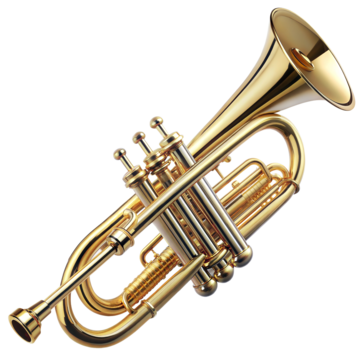
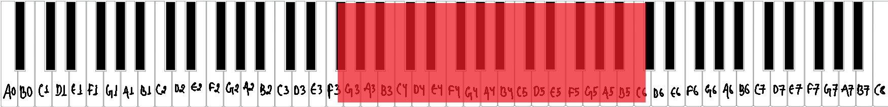
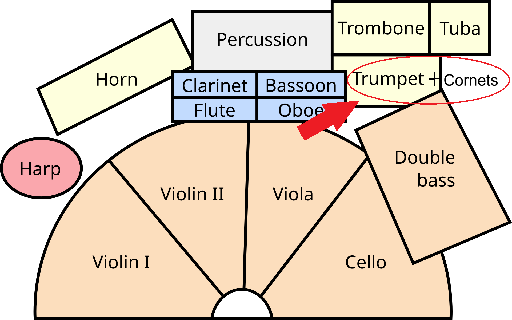
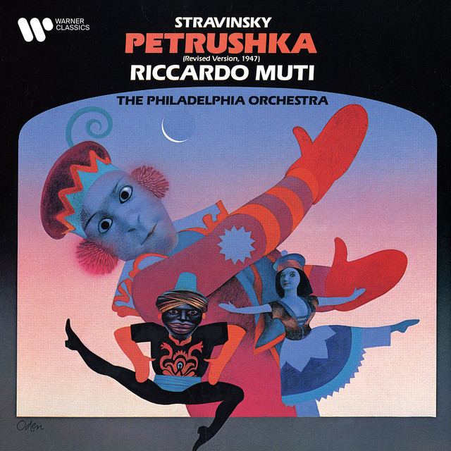
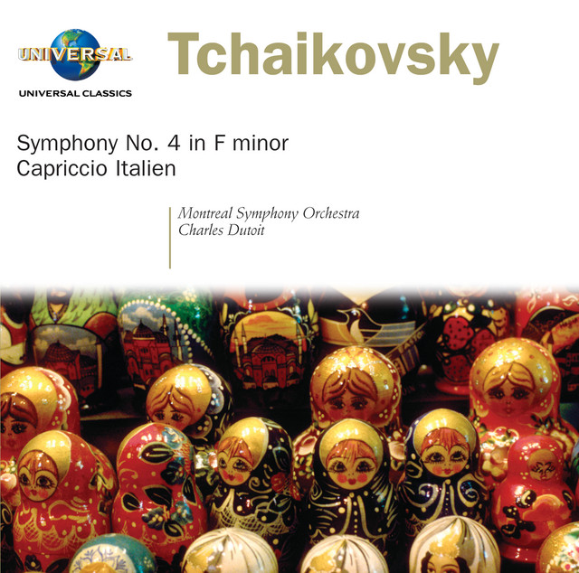
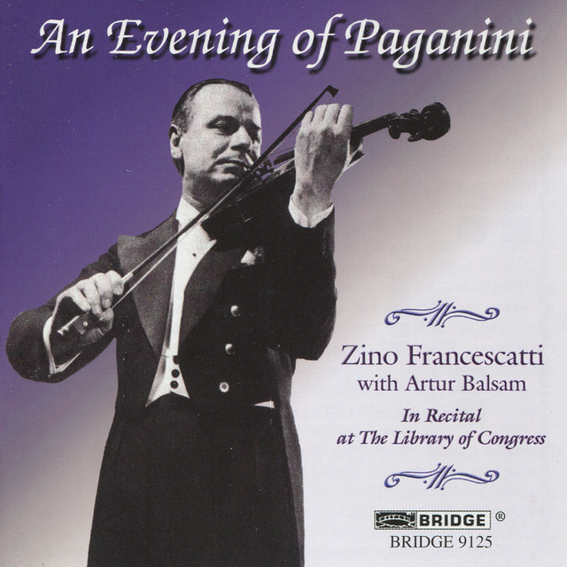
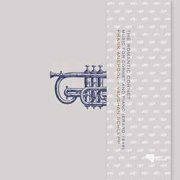

What is a cornet?
The cornet is a brass instrument that looks like a short, compact trumpet. Its tubing is more conical than a trumpet's, which gives it a softer, mellower tone. It has three valves and is a mainstay of brass bands. [1]


Musical range and clef
The common B♭ cornet has a written range from F♯3 up to about C6. It is a transposing instrument, so it sounds a whole step lower than written. [2]
Cornet music is written in the treble clef. [3]

Where is the cornet seated in an orchestra?
The brass section sits at the back of the orchestra, behind the woodwinds. From the conductor's podium, the horns are in the center, with the trumpets to their right and the trombones and tuba at the far right. Cornets are not part of the standard modern orchestra, since the trumpet usually takes their parts. When a score asks for them, they sit with the trumpets. [4]
Popular songs/pieces that feature the instrument:

Petrushka

Capriccio Italien

The Carnival of Venice

Napoli
References
- Wikipedia, "Cornet".
- Wikipedia, "Cornet".
- Wikipedia, "Cornet".
- Rockford Symphony Orchestra, "Are all orchestras arranged on stage the same way?".